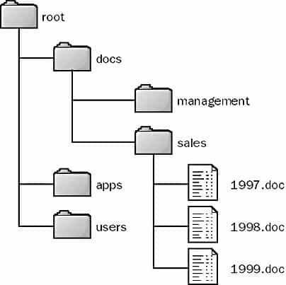
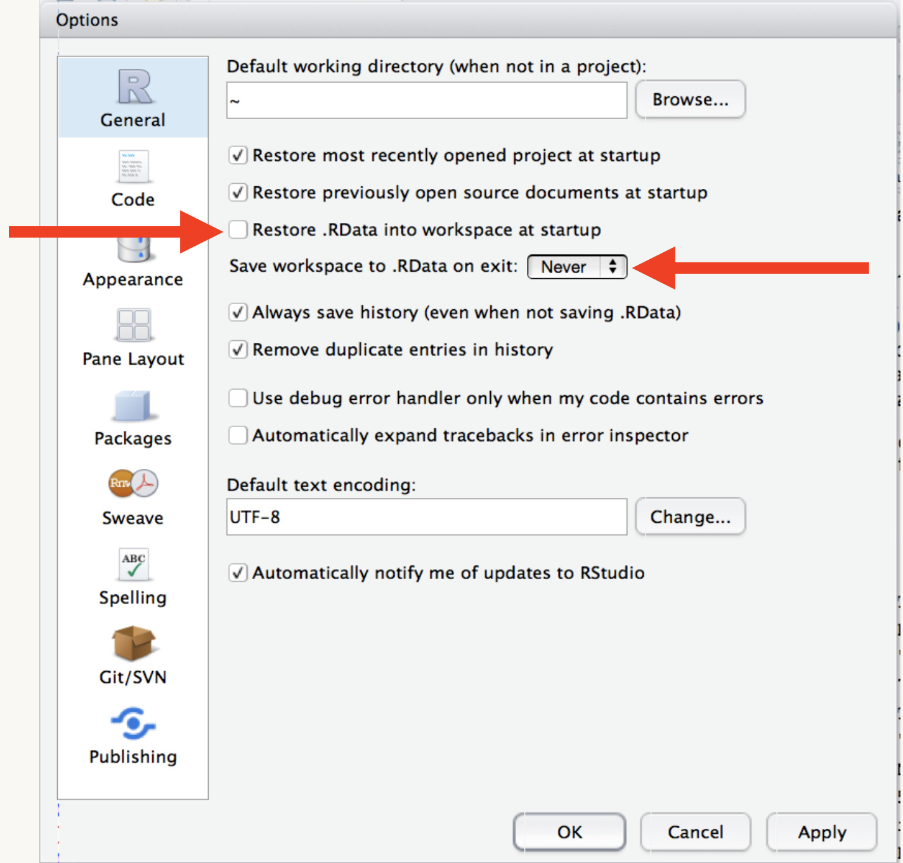

Getting the most out of R
Physalia Courses
Day 1
About: me

üá≤üáΩ üá¶üá∫ üá®üá≠ üá®üá±
- Mammals, conservation, macroecology
- Evolution, ecomorphology
- Phylogenetic Comparative Methods
- Biogeography, R as a GIS
- R user since 2011
- R ‘blogger’ since 2015
Why this course
Things other than data analysis/visualization take time
Overlooking basics ➡️ wasted time, bad habits
Dark curriculum
Blind spots
2nd edition
Updated material
More fluid exercises
OneDrive Issues
Timing for best learning outcomes
About: you
are familiar with basic data types and objects in R
can use functions and arguments
have R and RStudio running
can install and load packages
More about you
When did you start using R?
Why did you start using R?
How did you learn?
About: This course
4 sessions
Mon-Thu 14:00-20:00 Central European Summer Time
Monday - Introduction
Syntax quirks and idiosyncrasies
Milestones and changes in R through time
R ‘dialects’
The file system
Directory structures, file paths and names
Project and workflow organization
Projects, üì¶ {
here} and relative paths
Tuesday - Usable data
Organizing data in spreadsheets
Principles of rectangular data
Tools for data rectangling (tidyverse-oriented)
Data types and missing values
Wednesday - Increasing efficiency
Iteration, writing loops and using üì¶ {
purrr}Apply functions to many things at once
Reading many files at once
Modifying and exporting multiple objects
Regular expressions for working with text strings
Thursday - Overcoming errors and getting unstuck
Friendly online resources
Building web searches to solve common problems
Identifying the best solutions
Creating reproducible examples with the üì¶ {
reprex} package
Not part of this course
Making plots & maps
Making nice-looking tables
Statistical analyses
Package development
RMarkdown/Quarto
Sessions and structure
Exercises üìã
Challenges ☑️
Live coding ⌨️
Breaks ⏲️
My setup
R v4.1.2
RStudio 2022.02.0 “Prairie Trillium” Preview Release
Default theme and pane layout
Linux Mint 20.3
These slides
quarto instead of xaringan
Hosted online here
Source code and downloadable HTML format on GitHub
Your setup
(shared document)
Operating System
R version
IDE
Customization (fonts, editor themes, layouts)
Course prep
All slide decks available as HTML presentations on GitHub
Download from repository and open in browser or open directly from web
Create a new RStudio Project for this course
Name the project “
gtmor” and save it somewhere accessible (e.g. the Desktop)
Syntax quirks and idiosyncrasies
What is ?
“At the heart of the R project is a dynamic, lazy, functional, object-oriented programming language…
This rather unlikely linguistic cocktail would probably never have been prepared by computer scientists, yet the language has become surprisingly popular…
Morandat et al. (2012)
Evaluating the Design of the R Language
What is ?
Most sessions are interactive, the user loads data and starts by plotting the data and making various simple summaries.”
Morandat et al. (2012)
Evaluating the Design of the R Language
inherits(R,"S") == TRUE
Design principles and requirements
programming language? interactive environment? statistical package?
S had its roots in data analysis… its inventors were focused on figuring out how to make data analysis easier, first for themselves, and then eventually for others.
üìñ Roger Peng (2020)
History and Overview of R
R Programming for Data Science
Design principles and requirements
Ease the transition from user to developer, allow users to:
- Analyze and plot data interactively (command-line based)
- Develop new methods, custom tools, or programs (traditional programming)
Development history (and how this affects how we work)
1991-1993
1995
1997
2000
2003
2004
2015
2017
Developed by Ross Ihaka and Robert Gentleman
Established as an open source project
R Core Team formed & CRAN established
R v1.0.0 released
R Foundation established
First UseR! conference
Foundation of the R Consortium
CRAN exceeds 10,000 packages
Changes and milestones
2006
2007
2008
2009
üì¶reshape introduced - Foundations for ‚Äòlong‚Äô and ‚Äòwide‚Äô data transformations
official release for üì¶ggplot2
üì¶data.table üìº released to CRAN - Extensions for the R data.frame object. Fast, intuitive syntax.
üì¶plyr introduced - The split-apply-combine strategy for data analysis
Changes and milestones
2010
2011
2012
2012
2014
üì¶ reshape rebooted (reshape2)
RStudio IDE released
RLadies-Global founded
Interactive web applications with Shiny
üì¶ dplyr introduced - A grammar of data manipulation; upgrade to üì¶ plyr focused on data frames
Changes and milestones
2014
2014
2016-2018
2018-2020
Chained operations with pipes introduced (üì¶ magrittr also introduced late in 2014)
üì¶ tidyr introduced. Replaces üì¶reshape2. Tidy data formalized
Integration with big data & machine learning libraries (Spark, Tensorflow, Arrow)
Ursa Labs and Voltron Data - Cross platform Data Science Infrastructure
Changes and milestones
2019
2020
2021
2022
pivot_ functions introduced to üì¶ tidyr
- replacements for spread and gather
R v4.0.0 with stringsAsFactors = FALSE
Native/base pipes and shorthand anonymous functions
RStudio rebrands as Posit
* Constant performance upgrades with each release
* Growing community and user base
* Language translations and freely available material
Recap
R is a programming language and free software environment for statistical computing and graphics.
The R Project for Statistical Computing
- lazy
- functional programming
- object oriented
- analyst/programmer continuum
Lazy Evaluation
Evaluation: process of analyzing an expression and giving the user a value (e.g. typing 2+1 in the console and pressing Enter)
Why lazy? Allows a program to be more efficient in interactive sessions: only the needed objects will be loaded in memory and/or looked for
üìñ Colin Fay
About lazy evaluation
Lazy Evaluation
What will we see in the console?
üìñ Colin Fay
About lazy evaluation
Object-oriented programming (OOP)
models real-world entities as software objects with associated data
organizes software design around data, or objects, rather than functions and logic
Homer White (2021)
Object-Oriented Programming in R
Beginning Computer Science with R
OOP systems in R
- S3 & S4 (built-in with base R)
- R6 (provided by üì¶
R6) - R7 (WIP successor to S3 and S4)
üìº Hadley Wickham (2022)
An introduction to R7
rstudio::conf(2022)
Classes and objects with R7
Defining a new class with two properties
Classes and objects with R7
Construct an instance of the new class, get and set properties
Generics and methods
[1] "Woof"R7 Basics
R7 Vignette
Functional programming
More important than object-oriented programming. We typically solve complex problems by decomposing them into simple functions, not simple objects.
H. Wickham (2019)
Advanced R- 2nd Edition
Functions in R are ubiquitous
Everything that happens (in R) is a function call
John Chambers
Extending R
How many functions are being called here?
my_numbers <- my_example[,1]
* We’ll look at assignments later
and here?
and here?
This:
Is equivalent to this:
Why some people dislike can be hard to learn
- full of ambiguity and special cases…
- slow
- packages change all the time
- The syntax is inconsistent -
- many ways of doing the same thing
- unsuitable for software development
- too many ‘dialects’
- Third party package bloat
- Unhelpful help files
Many ways of doing the same thing
flavor calories in_stock
1 chocolate 12 TRUE
2 strawberry 13 TRUE
3 vanilla 19 FALSETal Yarkoni (2012)
R, the master troll of statistical languages
Get the values of the column flavor as a character vector
flavor calories in_stock
1 chocolate 12 TRUE
2 strawberry 13 TRUE
3 vanilla 19 FALSEGetting the values of the column flavor as a character vector
Can we come up with 5 more ways to extract these values?
Assignment operators
Assign a value to a name in an environment
= or <- or -> or assign()
Assignment
Right-arrow assignment
After typing a long expression only to remember at the end that it would be a good idea to save the result,
->allows you to perform an assignment without retyping the line.
The New S Language (Becker, Chambers and Wilks 1988)
- We’ll examine pipes later in this session
Quotes
Single (') and double (") quotes can be used interchangeably* but double quotes are preferred. Single quotes are normally only used to delimit character constants containing double quotes.
* Interchangeable as long as the same opening and closing quotes are used to delimit a character constant
Cannot delimit a string with both types of quotes
Works
Character constants are always printed using double quotes
Double quotes
Double quotes inside double quotes
Error: <text>:1:18: unexpected symbol
1: print("she said "yes
^Note the escapes
Tools, R dialects, & code conventions
IDEs
Pipes
Base R?
tidyverse?data.table?attaching objects & namespacing packages
tabs vs spaces, dots, dashes, underscores & lettercase
customization
The R console

IDEs
IDEs - Integrated development environments
- Code editor
- Aware of R’s syntax
- Provides ways to send code to a running R process
RStudio
Emacs + ESS (https://ess.r-project.org)
vim + Nvim-R: (Turn Vim Into an IDE for R)
Visual Studio + RTVS
Pipes
To perform multiple operations in sequence:
Nested code (results evaluated from the inside out)
Intermediate objects (assign objects with intermediate results and pass on to the next function in a sequence)
Pipes (structure sequential operations left-to-right)
Nested code
Intermediate objects
Pipes
Left Hand Side
(LHS)
pipe operator
%>%
from üì¶ magrittr
|> in R v >= 4.1.0
Right Hand Side
(RHS)
Take an object on the Left Hand Side of the pipe and insert it into a function as an argument on the Right Hand Side
* By default, LHS is placed as the first argument in the call
Pipes
Minimize the need for intermediate objects and nested code
Make code readable
Easy to add or remove steps
Insert with
ctrl + shift + M
Adolfo Álvarez (2021)
The (updated) history of the pipe operator in R
LHS |> RHS(argument = 12)
parses to
RHS(LHS, argument = 12)
magrittrpipes are more permissive
When piping into a function with no arguments, parentheses are optional with %>% but required with |>
less typing (by design) and less differentiation between functions and expressions on the RHS
with magrittr pipe
with base pipe
IDEs can toggle which pipe to insert
Isabella Velásquez (2022)
Understanding the native R pipe |>
Assigment pipe
%<>%
Reassigns the result of the pipe chain to the starting variable.
It's amazing the things one can do in base R (without installing or loading any other #rstats packages): pic.twitter.com/UfUnYMXVzd
— mike_kearney (@kearneymw) December 30, 2021
Handed office key to colleague (my mistake) as she kindly agreed to water my plants while I’m gone over the break. Came back today to this. And it’s excellent. pic.twitter.com/wcFzo8wch2
— Christoph Dworschak (@chris_dworschak) January 5, 2022
tidyverse

… an opinionated collection of R packages designed for data science. All packages share an underlying design philosophy, grammar, and data structures. Its primary goal is to facilitate a conversation between a human and a computer about data
Wickham et al. (2019)
Welcome to the tidyverse
https://www.tidyverse.org/
tidyverse
Encompasses the repeated tasks at the heart of every data science project: data import, tidying, manipulation, visualization, and programming
Intentionally designed to ease the learning process and make it easier for users to learn new functions as they engage with additional pieces of the larger ecosystem
Çetinkaya-Rundel et al. (2021)
An educator’s perspective of the tidyverse
arxiv.org/abs/2108.03510
Easy and efficient manipulation of data frames
Different syntax, underlying philosophies, user bases, intended functionality, learning curves, etc.
data.table
- uses the efficient
data.tableobject - SQL-like Syntax
- fast
- concise
Atrebas (2020)
A gentle introduction to data.table
dplyr
- uses tibbles
- verbs for different data operations
- works well with pipes
- communicative

Roger Peng (2020)
Managing Data Frames with the dplyr package

Luke Smith on Twitter. Unsure about meme context.
A data.table and dplyr tour
Atrebas (2020)
Side by side operations
Martin Chan (2020)
Comparing Common Operations in dplyr and data.table

dtplyr
Write dplyr code that is automatically translated to the equivalent, but usually much faster, data.table code.
Tabs vs. spaces, dots, dashes, underscores & lettercase
Spaces have the same length on all devices, tabs do not
Personal preference, but avoid mixing tabs and spaces for indentation
Let IDE tools help with styling and indentation
Tabs vs. spaces, dots, dashes, underscores & lettercase
periods in object and function names not recommended (possible clashes if R and Javascript are used together)
prefer lowerCamelCase or snake_case (dashes not allowed)
keep a consistent style across your codebase
üí¨ R: variable naming and other conventions?
Software Carpentry discussion on GitHub
Customization
- IDE themes - üîó tmThemeEditor by Allen Bargi
No one at the coffee shop will know you’re serious unless you have a dark background
-Jared Lander
üìº R: Then and now
Fonts and ligatures - üîó Nerd Fonts
Pane Layouts
Coding conventions
attach?namespacing
Apologies to @kobriendublin for my very unprofessional cry of "nooooo" when he suggested using attach in #rstats :)
— Natalie Cooper (@nhcooper123) March 7, 2015
So many hours of my life lost on MASS:select() issues
— Devon Cantwell-Chavez (@devon_cantwell) December 13, 2021
Amelia McNamara on Twitter
Michael J. Crawley (2007)
The R Book
“using
attachprovides simplicity and brevity, so that we can refer to variables by name and write shorter models”
attach()?
Attach Set of R Objects to the Search Path
The Search Path
A chain of environments that determines what objects are visible from the global workspace
environments
List-like objects that resemble a folder on our computer, binds a set of names to a set of values
Names and values

name-value bindings live in environments
Wickham (2019)
Advanced R- 2nd Edition
Search Path
search() lists the search names of environments attached to the search path
base::library()calls attach a new package environment to the search pathany list, data frame, or environment can be attached to the search path with
base::attach()
Matt Dray (2020) Owning the shame of my old R code
The Search Path - Your turn
Load any installed package and see how they become attached to the search path
Make any assignment, and note how you have added an entry in the global environment
ls()will show what variables and functions are defined in the current environment)
Namespaces and the :: operator
Namespace - management system that provides a context for looking up the value of an object associated with a name
allow package developers to define which functions and data will be available for users that load the package
prevent things from breaking when function names clash
provide a way to refer to an object within a particular package
Disambiguate package elements with ‘::’ (e.g. dplyr::select())
t() is the transpose function in base R
If we define our own t() function, namespaces prevent the new definition from taking precedence, and breaking every function that tries to transpose a matrix
Wickham and Bryan (2020)
R Packages - Second Edition
Namespaces - Practice
Load packages in different order and see how the search path changes
Use functions from installed packages without attaching them using namespacing
Files, paths, and projects
The File System

As a liberal college professor, I am trying to indoctrinate my students into a file naming system that does not include 78 documents called “Essay” all saved to their desktop.
‚Äî Dr. Liz W Faber (ft. Regina & Jackie üêàüêà) (@LizWFab) February 1, 2022
Directory structures, file paths and names

From the Network Encyclopedia
Store files in a particular location, with intentional and meaningful names
Use short, informative names
Avoid using names for versioning (e.g.
var_V2_final_2020)Choose names that sort well and work with searches for partial matches
Names
Good name
max_temp
min_price_usd
monthly_temp
Q1-profits_2018
Avoid
Maximum_temperatureC20102014
max
temp
'Minimum Price ($) USD'
'Temperature/Month (°F)'
2018q1
Jenny Bryan (2015)
Naming Things
üì¶ {fs}
Work with the file system (cross-platform)
fs functions always return ‘tidy’ paths
Tidy paths
- Always use ‘
/’ to delimit directories
- Never have multiple or trailing ‘
/’
file_ functions to work with files
dir_ functions for directories
File System - Practice
Try to only use the keyboard!
- Create a new folder in your project’s working directory (“my_new_dir”). Check if it was created successfully
- Create two new folders in your new folder (“data” and “data2”)
- Create a text file (‘mydata.csv’) inside “data”
- List all the contents (hint use
recurse = TRUE) - Move the text file to “data2”
- Import the data from the text file
Project and workflow organization
Project: a folder on your computer that holds all the files relevant to that particular piece of work.
Separate:
üìÅ Data (or code to get data from a remote resource)
üìÅ Analysis and/or visualization scripts
üìÅ Outputs (graphs, reports, intermediate data files, etc.)
Jenny Bryan (2017)
Project-oriented workflow
Maëlle Salmon (2021)
Draw me a project
RStudio Projects
dedicated R process
file browser pointed at Project directory
- convenient ‘go-to-project directory button’
working directory set to Project directory
- paths become relative to project directory

Save source, not the workspace

Save important objects or figures explicitly to file
avoid
rm(list = ls()), attached objects and packages persistSet up ‘blank slate’ and restart R session often
Jenny Bryan & Jim Hester (2020)
What they forgot to teach you about R
Jenny Bryan (2018)
Zen And The aRt Of Workflow Maintenance
Blank slate
do not save the workspace to an .Rdata file
at launch, do not reload the workspace from an .Rdata file.
Restarting R
Ctrl+Shift+F10
(Windows and Linux)Command+Shift+F10 (Mac)

Blank Slate - Practice
In a new R session:
Attach libraries and objects
Change a system setting
(e.g.Sys.setenv(LANGUAGE="ko"))Compare what happens with
rm(list = ls())vs restarting the session
üì¶ {here} and relative paths
F:\path\that\no one\else\has\my-project\analysis\script1.R
Work relative to your project root using here()
figures out the top-level of your current project
helps build portable file paths
returns absolute paths (starting with
/,<drive letter>:\or\\)
with the project root at my-project
would build:
F:\path\that\no one\else\has\my-project\analysis\script1.R
here() does not set the working directory, it simply builds a path to the top level of your project file every time you use it
here() is meant to figure out the top-level of a project (i.e. Where is the .Rproj file?) and build paths relative to this location
Jen Richmond
How to use the here package
If we change the working directory with setwd() but nothing else changes in the project, the top-level directory remains unchanged
use dr_here() to get an explanation of how the top-level directory was determined
Jen Richmond
How to use the here package
Practice - building paths with here
- Load the
herepackage - Identify the top-level directory of your project
- Change the working directory of the project
- Try
here()again